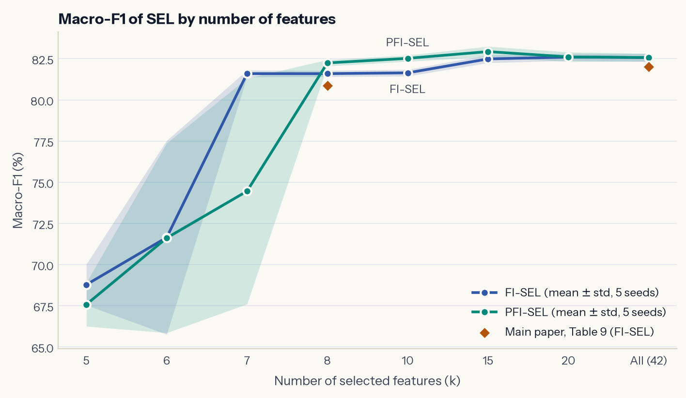
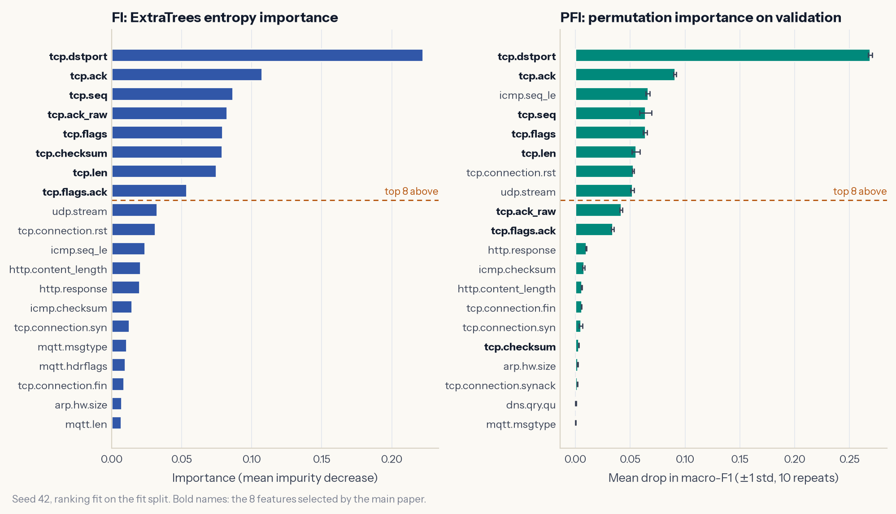
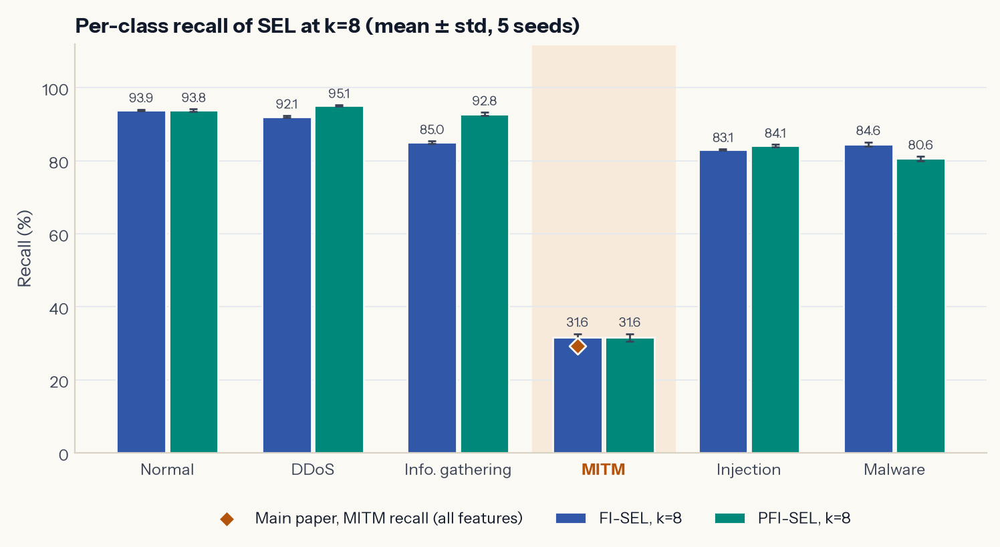
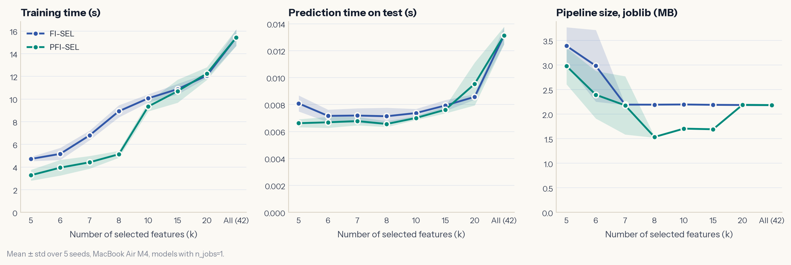
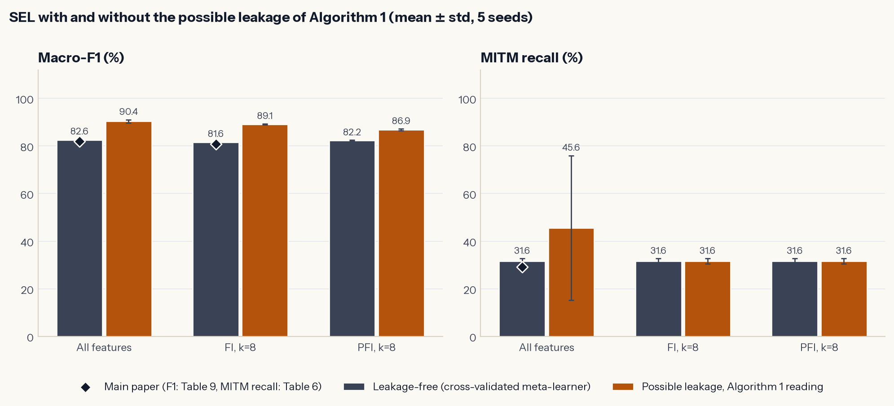

دستگاهها حافظه، توان پردازش و فضای ذخیرهسازی محدودی دارند. همین محدودیت آنها را در برابر حمله آسیبپذیر میکند.
شبکههای IoT و IIoT به راهحل امنیتی اختصاصی نیاز دارند، چون ویژگیهای آنها با شبکههای سنتی فرق دارد.
سامانهی تشخیص نفوذ (Intrusion Detection System، IDS) ترافیک را بررسی میکند تا حمله را تشخیص دهد.
نرخ تشخیص بالایی دارد، ولی حملهی روز صفر را نمیبیند.
حملهی روز صفر را میبیند، ولی هشدار نادرست و مصرف منابع بیشتری دارد.
تعداد زیاد ویژگی یکی از دلیلهای سنگینی مدل است و کاهش ابعاد (Dimensionality Reduction) این هزینه را کم میکند.
مقالهی اصلی سبک بودن را با نسبت تعداد ویژگیها میسنجد.
مقالهی پشتیبان حجم مدل، زمان استنتاج و RAM را روی Raspberry Pi اندازه میگیرد.
کاهش تعداد ویژگی همیشه به مدل سبکتر نمیرسد.
| کلاس | تعداد | سهم (٪) | |
|---|---|---|---|
| Normal | ۲۴٬۳۰۱ | ۱۵٫۴ | |
| DDoS | ۴۹٬۳۹۶ | ۳۱٫۳ | |
| Information gathering | ۲۱٬۱۴۸ | ۱۳٫۴ | |
| MITM | ۱٬۲۱۴ | ۰٫۸ | |
| Injection | ۳۰٬۶۳۲ | ۱۹٫۴ | |
| Malware | ۳۱٬۱۰۹ | ۱۹٫۷ |
پانزده نوع حمله با گروهبندی Ferrag در شش کلاس قرار میگیرند. کلاس MITM کمتر از یک درصد داده است.
هشت ویژگی برتر FI مقاله همه از لایهی TCP هستند:
ابهام طبق الگوریتم ۱، احتمال نشت وجود دارد، ولی متن ص. ۴ میگوید پیشبینیها به دادهی آموزش اضافه میشوند.
| معیار | همهی ویژگیها (۴۲) | k=8 |
|---|---|---|
| Accuracy | ۸۹٫۰۵ | ۸۷٫۳۷ |
| macro-F1 | ۸۲٫۰۰ | ۸۰٫۸۸ |
| زمان آموزش (s) | ۳۷٫۲۳ | ۱۶٫۱۸ |
| زمان آزمون (s) | ۰٫۲۸ | ۰٫۱۰ |
مقاله افت دقت با کاهش ویژگیها را ناچیز میداند و k=8 را بهدلیل زمان کمتر انتخاب کرده است.
این مقاله مدل را ثابت نگه میدارد و پنج روش کاهش ابعاد را مقایسه میکند.
اهمیت ویژگی جایگشتی (Permutation Feature Importance، PFI) افت عملکرد مدل را پس از بههمریختن مقدارهای یک ویژگی روی دادهی نادیده میسنجد.
| روش | ویژگی | Accuracy (٪) | حجم مدل (MB) |
|---|---|---|---|
| Base RF | ۴۳ | ۹۸٫۸۷ | ۸۵٫۶۱ |
| MI | ۱۶ | ۹۸٫۸۵ | ۸۳٫۲۴ |
| PFI | ۱۴ | ۹۸٫۹۷ | ۴۷٫۵۴ |
| PCA | ۲۲ | ۹۸٫۷۱ | ۸۷٫۱۳ |
MI با ۱۶ ویژگی تقریباً همحجم مدل پایه است، ولی PFI حجم را حدود ۴۵ درصد کم کرده است. پس تعداد ویژگی کمتر لزوماً حجم کمتر نمیدهد.
روش مقاله از روی متن آن ساخته شد، چون کد نویسندگان منتشر نشده است.
FI و PFI روی همان ExtraTrees و در شرایط یکسان مقایسه شدند.
حجم واقعی pipeline و زمان آموزش و آزمون اندازه گرفته شد.
ادعاهای مقاله با شاهد از متن و از نتیجهی آزمایش نقد شد.
PFI در مقالهی پشتیبان روی همین دیتاست بهترین توازن دقت و کارایی را داشت. این روش افت macro-F1 را روی دادهی نادیده میسنجد، در حالی که FI از ساختار درختهای آموزشدیده میآید.
مدلهای نهایی روی کل دادهی آموزش، یعنی بخش fit بهاضافهی اعتبارسنجی، آموزش میبینند.
StackingClassifier با passthrough=True و stack_method="predict" ساخته شد. اعتبارسنجی متقابل پنجبخشی پیشبینیهای خارج از fold را برای مدل نهایی میسازد.
| معیار | مقاله، همه | ما، همه | مقاله، k=8 | ما، k=8 |
|---|---|---|---|---|
| Accuracy | ۸۹٫۰۵ | ۸۹٫۲۵ ± ۰٫۰۷ | ۸۷٫۳۷ | ۸۷٫۷۲ ± ۰٫۱۱ |
| macro-F1 | ۸۲٫۰۰ | ۸۲٫۵۷ ± ۰٫۲۴ | ۸۰٫۸۸ | ۸۱٫۵۹ ± ۰٫۱۹ |
| نسبت زمان آموزش | – | – | ۰٫۴۳ | ۰٫۵۸ |
| نسبت حجم pipeline | – | – | – | ۱٫۰۰ |
زمانهای مطلق روی سختافزار دیگری اندازه گرفته شدهاند، پس مقایسهی زمان فقط روی نسبتها انجام میشود.

در k=6 و k=7 واریانس زیاد است، چون ترتیب درونی هشت ویژگی برتر با seed عوض میشود.

PFI این سه ویژگی را بالا میآورد:
و این سه را بیرون میگذارد:
هر دو مجموعه در هر پنج seed ثابت میمانند.
رتبهبندی PFI حدود ۱۱۷٫۵۰ ثانیه و FI حدود ۰٫۷۴ ثانیه طول میکشد.

بردار تمامصفر ۸۲۱ بار با MITM و ۱٬۹۲۶ بار با کلاسهای دیگر آمده است.
پس حدود ۶۸ درصد ردیفهای MITM قابل تمایز نیستند و سقف recall ۳۲٫۳۷ درصد است.
وزندهی balanced و SMOTE این بردار را به MITM میدهند. Recall به ۱۰۰ میرسد، ولی precision به ۳٫۵۸ برای FI و ۲۳٫۶۱ برای PFI میافتد.


نسخهی دارای نشت به ۹۰٫۴۰ ± ۰٫۶۵ میرسد که حدود هشت واحد بالاتر از جدول ۹ است. پس برداشت لفظی الگوریتم ۱ اعداد مقاله را نمیسازد.
| همهی ویژگیها | ۸۲٫۵۷ ← ۹۲٫۲۶ |
| PFI، k=8 | ۸۲٫۲۵ ← ۹۲٫۳۱ |
| recall کلاس MITM | ۳۱٫۶۰ ← ۹۹٫۷۲ |
عدد ۸۶٫۹ درصد از نسبت تعداد ویژگیها آمده است.
الگوریتم ۱ با متن ص. ۴ ناسازگار است.
مقاله هیچ روشی برای عدم توازن به کار نبرده است.
هیچ آزمایشی روی دستگاه کممنبع انجام نشده است.
همهی آزمایشها فقط روی Edge-IIoTset هستند.
ابرپارامترها و seed در مقاله نیامدهاند.
این شاهد از بازپیادهسازی ما آمده است.
DT تنها در کار ما به ۸۲٫۶۱ میرسد و SEL به ۸۲٫۵۷.
سبک بودن را باید با اندازهگیری مستقیم حجم و زمان سنجید، نه با شمردن ویژگیها.